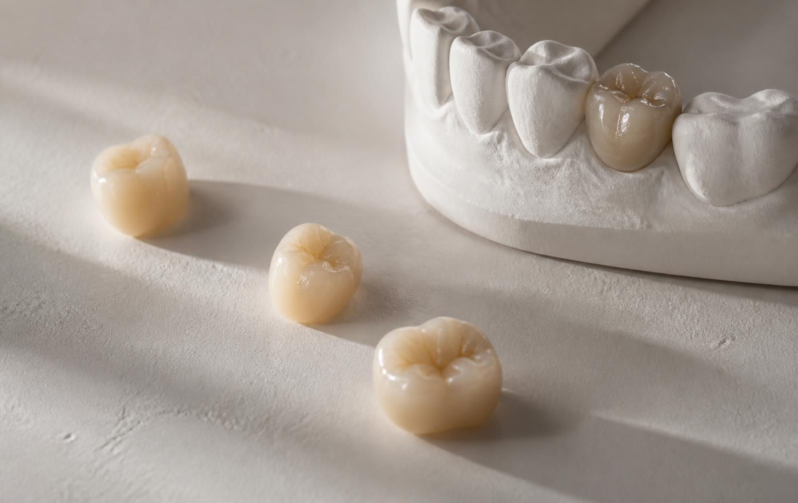
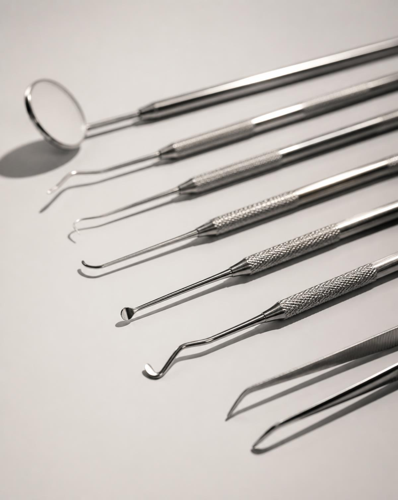

1
Implantología
Estudio del caso, planificación de la colocación y control posterior. Cada etapa se conversa antes de comenzar.
- Estudio del caso
- Planificación
- Colocación
- Controles
Cada área tiene su propio ritmo. Lo que no cambia es el orden: primero entender el caso, después proponer, y recién ahí tratar.
Índice 1 — 6

Estudio del caso, planificación de la colocación y control posterior. Cada etapa se conversa antes de comenzar.
Trabajamos sobre lo que ya está: proporción, color y superficie. El objetivo no es una sonrisa igual a otra, sino una que se corresponda con cada rostro.
Tratamientos de mediano y largo plazo, con etapas definidas y controles pautados desde el inicio.
Cuando la pieza puede conservarse, se conserva. El procedimiento se realiza con instrumental específico y control radiográfico.
La base de cualquier tratamiento. Evaluación del estado periodontal, terapia y mantenimiento periódico.
El tratamiento más económico es el que no hace falta. Controles regulares y educación sobre la propia higiene.

Antes de cualquier procedimiento existe un diagnóstico documentado y un plan conversado. La información clínica de cada caso se registra y se comparte.